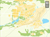
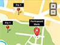
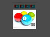

This plugin can be used 7 different ways as shown in the "Examples" folder. Each variation has its own style sheet and html elements but uses same Javascript file.
| Example 1 | Example 2 | Example 3 | Example 4 | Example 5 | Example 6 | Example 7 |
|  |  |  |
| Example 1 - Default version |
|---|
1. First set ID attribute for the image in your web page. For example:<img id="yourImageID" src="your_image.jpg" />
|
|
Example 2 - The Pan buttons removed. - The image is allowed to drag / pan more than boundary. - Button Size increased. - Buttons are aligned to Top Right. |
|---|
1. First set ID attribute for the image in your web page. For example:<img id="yourImageID" src="your_image.jpg" />
|
|
Example 3 - Button size increased a little bit. - Buttons aligned to Bottom - Center. - Auto Hide enabled for Buttons. |
|---|
1. First set ID attribute for the image in your web page. For example:<img id="yourImageID" src="your_image.jpg" />
|
|
Example 4 - This example included just to demonstrate how to control the zoom navigation from outside the plugin by calling plugin methods. - Also demonstrates how to retrieve the scale and position values on run-time. |
|
|---|---|
|
|
Example 5 - Location / Landmarks can be added with custom position. - Landmarks can be showed either always or showed only when enlarged to certain percentage. - 2 different types of landmark elements can be added: LABLE Type: This is a div that can have text, image or any html elements. This will be centered to the specified point. MARK Type: This is a div that can have text and a pin graphic (image) which always aligns its bottom to the specified position. |
|---|
1. Paste following code in the body of your html.
In the above code, 2. Inside the head tag of your page, paste the following style:
<style>
.smooth_zoom_preloader {
background-image: url(zoom_assets/preloader.gif);
}
.smooth_zoom_icons {
background-image: url(zoom_assets/icons.png);
}
#zoom_container .landmarks{
position:absolute;
z-index:10;
top:0px;
left:0px;
font-family: Helvetica, Arial, Verdana;
font-size:12px;
color: #ffffff;
}
#zoom_container .landmarks .item {
position:absolute;
text-align:center;
display: none;
}
#zoom_container .landmarks .lable div {
width: 100px;
padding: 4px;
}
#zoom_container .landmarks .mark .text{
background-color:#000000;
padding:2px 6px;
}
</style>
In the above style sheet: 3. Inside the head tag of your page (below the style added in Step 2), paste the following code:
<script src="zoom_assets/jquery-1.11.1.min.js"></script>
<script src="zoom_assets/jquery.smoothZoom.min.js"></script>
<script>
jQuery(function($){
$('#yourImageID').smoothZoom({
width: 512,
height: 384,
pan_BUTTONS_SHOW: "NO",
pan_LIMIT_BOUNDARY: "NO",
button_SIZE: 24,
button_ALIGN: "top right",
zoom_MAX: 200,
border_TRANSPARENCY: 20,
container: 'zoom_container'
});
});
</script>
In the above code,
4. Next step is configuring the settings as per your need, which is explained in next Chapter. After customisation, upload the folder named zoom_assets along with your file. |
|
Example 6 - Works as a simple Thumbnail gallery. - Thumbnail images can be added easily as list item <li> - Main image url can be added using hyperlinks of thumbnails. |
|---|
1. Paste following code in the body of your html.
In the above code,
|
|
Example 7 - Works as a lightbox gallery using prettyPhoto plugin. - Thumbnail images can be added easily as list item <li> - Main image url can be added using hyperlinks of thumbnails. |
|---|
1. Paste following code in the body of your html.
In the above code,
|
Here are the list of plugin parameters:
|
Parameter |
Description |
|---|---|
width: 500 |
Adjust these two values to set desired zoom area. The values can be in 'px' or % or just number. If these values left blank (Ex: width: ''), the plugin will try to get 100% width and height of the parent container. Example Values: 500 or '500' or '500px' or '100%' |
height: 300 |
|
initial_ZOOM: '' |
Initial zoom value in percentage. If left blank, the plugin will resize the image to fit the available area. |
initial_POSITION: '' |
Initial X, Y position value. If left blank, the plugin will just center the image Example Value: '300 480' |
animation_SMOOTHNESS: 5.5 |
The zoom and pan smoothness. Values should be positive number and can be anywhere between 0 to 10 |
animation_SPEED_ZOOM: 5.5 |
The speed of scaling / resize. Values should be positive number and can be anywhere between 0 to 10 |
animation_SPEED_PAN: 5.5 |
The speed of movements / pan. Values should be positive number and can be anywhere between 0 to 10 |
zoom_MAX:800 |
Maximum allowable zoom level in percentage. |
zoom_MIN:100 |
Minimum allowable zoom level in percentage. |
zoom_SINGLE_STEP: false |
To reach maximum and minimum zoom levels in single click. |
zoom_OUT_TO_FIT: false |
When the image is completely zoomed out, whether it should fill the canvas area (without any white space) or needs to fit and show the full image even if there are white space in either of side. Possible values: true / false |
zoom_BUTTONS_SHOW: true |
To show or hide the + and - Buttons. Possible values: true / false |
pan_BUTTONS_SHOW: true |
To show or hide the pan (arrow) buttons. The Pan buttons can be completely removed along with Reset button. Possible values: true / false |
pan_LIMIT_BOUNDARY: true |
Whether the image can be dragged inside the boundary fully or not. Possible values: true / false |
pan_REVERSE: false |
It is possible to reverse the direction of movment here. Possible values: true / false |
reset_ALIGN_TO: 'center center' |
While pressing the reset button, depending on some settings, the image may stilla have larger size than view area. In such cases, it is possible to align the image to desired position.
'center left' |
reset_TO_ZOOM_MIN: true |
If the parameter zoom_MIN is enabled (by adding some value), then clicking minus button or reset button will zoom out only upto minimum value set. By making this paramter into false, reset button will allow image to shrink until it covers view area (even less than minimum value if needed). |
button_SIZE: 18 |
Button size in pixels. Can be increased upto 80 |
button_SIZE_TOUCH_DEVICE: 24 |
Button size in pixels but specially for touch devices. In touch devices, the button sizes needs to be larger for usability. Can be increased upto 80 |
button_COLOR: '#FFFFFF' |
Button color in hexadecimal. Note that some of the browsers doesn't support rounded corners. In such cases this plugin will use image graphics for corners. So when you change this color, you will need to edit the image graphics and change its color also. The image is on: zoom_assets/icons.png |
button_BG_COLOR: '#000000' |
The color of background box which is below the buttons. Note that some of the browsers doesn't support rounded corners. In such cases this plugin will use image graphics for corners. So when you change this color, you will need to edit the image graphics and change its color also. The image is on: zoom_assets/icons.png |
button_BG_TRANSPARENCY: 55 |
The button background's transparency in percentage Possible values: 0 to 100 |
button_AUTO_HIDE: false |
To Show / Hide the navigation buttons when the user holds mouse over or outside the image. Possible values: true / false |
button_AUTO_HIDE_DELAY: 1 |
When the user mouse the mouse cursor outside the image, the auto-hide action will be triggered after a delay. Enter delay time in seconds. Example Values: 2 or 1.5 or 3.2 etc |
button_ALIGN: 'bottom right' |
The buttons can be aligned to 9 possible locations: 'top left' 'top center' 'top right' 'center left' 'center center' 'center right' 'bottom left' 'bottom center' 'bottom right' |
button_MARGIN: 10 |
The space between button set edge of the zoom area in pixels. |
button_ROUND_CORNERS: true |
To make all the buttons and button backgrounds corner into sharp edge. Possible values: true / false |
touch_DRAG: true |
To enable / disable the touch drag option. (for touch devices) Possible values: true / false |
mouse_DRAG: true |
To enable / disable the mouse drag option. (for mouse devices) Possible values: true / false |
mouse_WHEEL: true |
To enable / disable the mouse wheel zoom option. Possible values: true / false |
mouse_WHEEL_CURSOR_POS: true |
When the Mouse Wheel used, the zooming action focuses the mouse cursor position. To disable it and make it focus the canvas center, set this value into false Possible values: true / false |
mouse_DOUBLE_CLICK: true |
To enable / disable the zoom action when double clicking the image. Possible values: true / false |
background_COLOR: '#FFFFFF' |
Background color of the whole zoom area in hexadecimal. If don't want to set any color, then enter value 'transparent' |
border_SIZE: 1 |
Thickness of the border applied to the entire zoom area. |
border_COLOR: '#000000' |
Color of the border in hexadecimal |
border_TRANSPARENCY: 10 |
Transparency of border in percentage |
image_url: '' |
If you prefer not to use img tag for image and just need to send the image url to plugin, this property will be helpful. In such cases, the plugin needs to be initiated using a div tag's id like this: Assume, you have this div on body, <div id='zoom_container'></div>Initiate plugin this way:
$('#zoom_container').smoothZoom({
image_url: 'my_image.jpg'
});
|
image_original_width: '' |
Width of the main image. This value needed only when image inserter using image_url parameter instad of img tag. Although it is sufficient to use url attribute for img tags, it is needed on iOS browsers to if the location/landmarks used or focusTo method called. |
image_original_height: '' |
Height of the main image. This value needed only when image inserter using image_url parameter instad of img tag. Although it is sufficient to use url attribute for img tags, it is needed on iOS browsers to if the location/landmarks used or focusTo method called. |
container: '' |
By default, this plugin wraps your image by adding a div container as parent. In case you need to use your own container for such thing, enter the id of that container here. |
on_IMAGE_LOAD: functionName |
In case an external function needs to be called immediatly after image load, set your function here. This function has no return values. |
on_ZOOM_PAN_UPDATE: functionName |
In case an external function needs to be called whenever the zoom/pan animation happens, set your function here. The external function will receive 2 arguments. - First one is the same object that getZoomData method returns. See getZoomData to know more about return values. - Second argument is a boolean value to mention whether the animation completed or not. |
on_ZOOM_PAN_COMPLETE: functionName |
In case an external function needs to be called whenever the zoom/pan animation completes, set your function here. The external function will receive an argument which is the same object that getZoomData method returns. See getZoomData to know more about return values. |
on_LANDMARK_STATE_CHANGE: functionName |
In case an external function needs to be called whenever the zoom/pan animation completes, set your function here. The external function will receive single argument as boolean whether the landmarks are visible or not. |
use_3D_Transform: true |
In webkit based browsers (Chrome and Safari), using 3D transformation enables hardware acceleration which imporves performance. This is more benificial on the Smart phones and Tablets. However while using large number of landmarks (above 30-40), the same may not help performance, so it is recommended to disable only on such implementations. Possible values: true / false |
responsive: false |
To enable / disable Responsive and Fluid layout support. Possible values: true / false |
responsive_maintain_ratio: true |
When the responsive behavior is enabled, the width of the zoom container will resize and adjust to available space. In such cases we can either - keep the height unchanged or - change the height to maintain default proportion. Possible values: true / false |
max_WIDTH: '' |
Maximum possible width of view area in pixels. This property will be active only on following 2 occasions: - Responsive property enabled - Width property set to % value rather than pixels Possible values: Any interger |
max_HEIGHT: '' |
Maximum possible heightof view area in pixels. This property will be active only on following 2 occasions: - Responsive property enabled - Height property set to % value rather than pixels Possible values: Any interger |
In the above method, all the 4 available properties are included. The speed is optional. Also the method can work with atleast one of the 3 main properties mentioned. Example: smoothZoom('focusTo', {zoom: 400});
Important: All the below functions should be called on Mouse Down event. NOT on click or Mouse Up.
To add/remove/update landmarks dynamically after page load, call the following methods:
For this particular set of methods, please go through the help comments added in the file Example 5 [Landmarks] - 02 Dynamic for more details.
More than 1 landmark can be added at a time. In the above code, LANDMARK 1 and LANDMARK 2 etc needs to be replaced with your DIV set. (See the file Example 5 [Landmarks] - 02 Dynamic on the source package for more details)
This method may be required in case some of the landmarks added / removed directly inside the landmarks wrapper without using above methods. For example, if one or two new landmark DIV sets appended to the landmarks container, the plugin may not aware there are new elements added to the landmarks wrapper. Calling this method helps resolve that problem.
This plugin supports resposive behavior, so just enabling resposive setting will solve most of such requirements. However additionally this resize method provided.
Calling this method returns the values as object. Please go through the next section Get Zoom Data for more details about accessing values.
var zoomData = $('#yourImageID').smoothZoom('getZoomData');
ratio = zoomData.ratio;
offsetX = zoomData.normX;
offsetY = zoomData.normY;
List of all the properties returned by the above method:
| normX | X offset without scale ratio multiplied |
| normY | Y offset without scale ratio multiplied |
| normWidth | Original image Width |
| normHeight | Original image Height |
| scaledX | X offset with scale ratio multiplied |
| scaledY | Y offset with scale ratio multiplied |
| scaledWidth | Scaled image Width |
| scaledHeight | Scaled image Height |
| centerX | The X point on image which is currently over center of canvas |
| centerY | The Y point on image which is currently over center of canvas |
| ratio | Ratio between original and scaled image dimension |